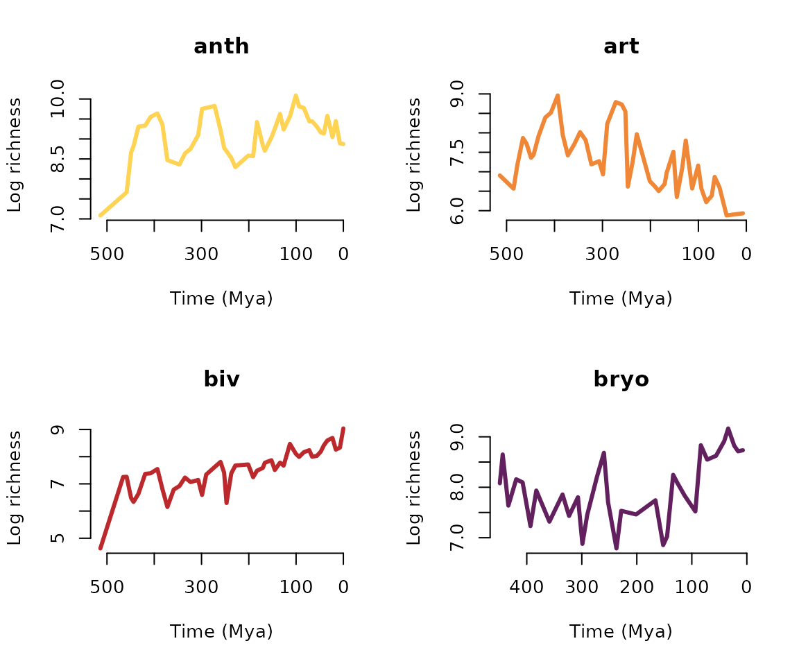
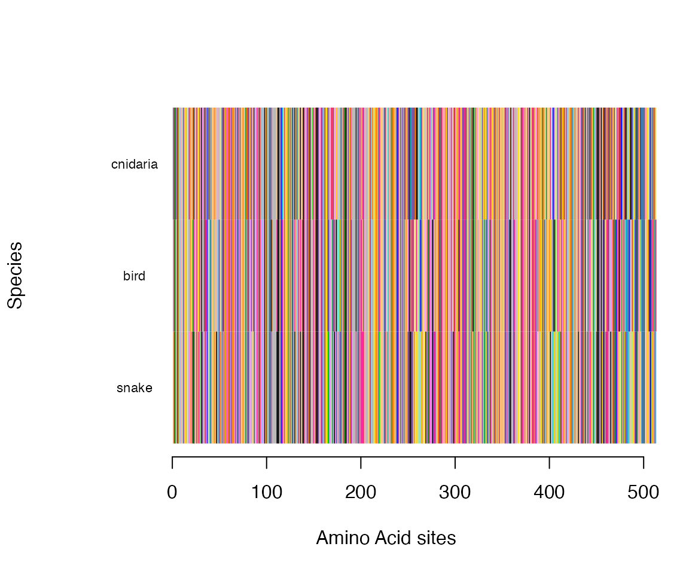

Clocks and Rocks
Matheus Januario and Jennifer Auler
Dec/2023
Source:vignettes/rocks_and_clocks.Rmd
rocks_and_clocks.Rmd
library(evolved)
# Let's also store our par() configs so
# we can restore them whenever we change it in this tutorial
oldpar <- par(no.readonly = TRUE) The fossil record:
Here we will use data on fossilized organism, which we call “fossil occurrences”. the data was originally obtained from the Paleobiology database, a free-to-use resource that is the standard repository for such data and which has been used by hundreds or thousands of scientific research articles to study the history and dynamics of biodiversity in Deep Time.
## phylum class order family
## 1 Chordata Ornithischia NO_ORDER_SPECIFIED Chaoyangsauridae
## 2 Chordata Saurischia Avetheropoda NO_FAMILY_SPECIFIED
## 3 Chordata Saurischia Avetheropoda NO_FAMILY_SPECIFIED
## 4 Chordata Saurischia Avetheropoda Tyrannosauridae
## 5 Chordata Saurischia Avetheropoda Tyrannosauridae
## 6 Chordata Ornithischia NO_ORDER_SPECIFIED Ceratopsidae
## genus species early_interval late_interval
## 1 Chaoyangsaurus Chaoyangsaurus youngi Late Tithonian Valanginian
## 2 Protarchaeopteryx Protarchaeopteryx robusta Late Barremian Early Aptian
## 3 Caudipteryx Caudipteryx zoui Late Barremian Early Aptian
## 4 Gorgosaurus Gorgosaurus libratus Late Campanian
## 5 Gorgosaurus Gorgosaurus libratus Late Campanian
## 6 Centrosaurus Centrosaurus apertus Late Campanian
## max_ma min_ma midpoint lng lat
## 1 150.8 132.90 141.85 123.9667 42.93330
## 2 130.0 122.46 126.23 120.7333 41.80000
## 3 130.0 122.46 126.23 120.7333 41.80000
## 4 83.5 70.60 77.05 -111.5287 50.74073
## 5 83.5 70.60 77.05 -111.5493 50.73701
## 6 83.5 70.60 77.05 -111.5289 50.73730Students can use functions in the package to calculate the diversity of a certain taxonomic rank, and plot it through time.
To make it more fun, we will compare tow different taxonomic levels, and will plot them in a relative, log scale:
spDTT = calcFossilDivTT(dinos_fossil, tax.lvl = "species")
genusDTT = calcFossilDivTT(dinos_fossil, tax.lvl = "genus")
famDTT = calcFossilDivTT(dinos_fossil, tax.lvl = "family")
# And to allow comparisons, we will use relative richness:
plot(x=genusDTT$age, xlim = rev(range(genusDTT$age)),
y=log(genusDTT$div)-log(max(genusDTT$div)),
xlab="Time (Million years ago)",
ylab="Log relative diversity",
type="l", col="blue", ylim=c(-7,0))
lines(x=famDTT$age,
y=log(famDTT$div)-log(max(famDTT$div)),
col="red")
lines(x=spDTT$age,
y=log(spDTT$div)-log(max(spDTT$div)),
col="black")
We can also visualize fossil records by running:
# Family-level:
plotRawFossilOccs(dinos_fossil, tax.lvl = "family", knitr = TRUE)
# Genus level:
plotRawFossilOccs(dinos_fossil, tax.lvl = "genus", knitr = TRUE)
# Species level:
plotRawFossilOccs(dinos_fossil, tax.lvl = "species", knitr = TRUE)Are they different? how could we test? Hint: look at the column names of the fossil object:
colnames(dinos_fossil)## [1] "phylum" "class" "order" "family"
## [5] "genus" "species" "early_interval" "late_interval"
## [9] "max_ma" "min_ma" "midpoint" "lng"
## [13] "lat"Now, how complete is the record? We can use another dataset to explored this:
data("birds_spp")And see the proportion of living species with a fossil occurrence.
## [1] 0.1139798Students can for instance explore how this varies across different mammal groups, and which type of factors (e.g. biological, geological factors) seem to be influencing this the most.
Results from this dataset can also be compared (when relevant) with other fossil records, like those one can download from the Paleobiology Database.
We can also compare the temporal trends of species number, for instance. To help in that way, we also provide biodiversity timeseries for more clades:
## clade source stem_age rel_time time_ma richness
## 1 anth Alroy2010 617 617.000 0.000 7138
## 2 anth Alroy2010 617 609.754 7.246 7246
## 3 anth Alroy2010 617 601.030 15.970 12673
## 4 anth Alroy2010 617 593.970 23.030 8485
## 5 anth Alroy2010 617 583.100 33.900 14475
## 6 anth Alroy2010 617 575.800 41.200 9280It contains many fossil datasets, and we will only plot the first 4 of them
clades = unique(timeseries_fossil$clade)[1:4]
cols= c("#ffd353", "#ef8737", "#bb292c", "#62205f")
par(mfrow=c(2,2))
for(i in 1:length(clades)){
aux = timeseries_fossil[timeseries_fossil$clade==clades[i], ]
plot(aux$time_ma, log(aux$richness), col=cols[i], lwd=3,
main=clades[i], type="l", frame.plot = F,
xlab="Time (Mya)", ylab="Log richness",
xlim=rev(range(aux$time_ma)))
}
# Restoring old par() configs:
par(oldpar)Students can explore this other dataset, and compare it with the previously discussed ones. They can compare richness thought time, calculate statistics related to richness change. Explore factors (e.g. mass extinction) that might have affected some clades, among other learning problems.
But fossils are not the only way to explore the timescale of evolution. Below, we are going to show how some functions that use this type of data work.
Comparing molecular patterns
With other functions, students can also explore molecular sequences and compare species.
First we load the dataset of protein sequences from the cytochrome
oxidase 1 gene. This gene, often known as CO1, is a
mitochondrial gene that plays a key role in cellular respiration (e.g.,
the primary aerobic pathway to energy ( ATP ) generation).
CO1 contains approximately 513 aminoacids (AA) and has been
used by previous studies for reconstructing phylogenetic trees and
estimating divergence times between taxa by assuming a molecular
clock:
##
## 17 amino acid sequences, each with length 513
head(cytOxidase)## $cnidaria
## [1] "-RWIFSTNHKDIGTLYL"
##
## $snake
## [1] "TRWLFSTNHKDIGTLYL"
##
## $echinoderm
## [1] "NRWLFSTNHKDIGTLYL"
##
## $mollusk
## [1] "MRWLFSTNHKDIGTLYI"
##
## $alligator
## [1] "HRWFFSTNHKDIGTLYF"
##
## $lamprey
## [1] "IRWLFSTNHKDIGTLYL"
##
## $shark
## [1] "NRWLFSTNHKDIGTLYL"
##
## $bird
## [1] "NRWLFSTNHKDIGTLYL"
##
## $frog
## [1] "TRWLFSTNHKDIGTLYL"
##
## $fish
## [1] "TRWLFSTNHKDIGTLYL"
##
## $platypus
## [1] "NRWLFSTNHKDIGTLYL"
##
## $human
## [1] "DRWLFSTNHKDIGTLYL"
##
## $chimpanzee
## [1] "DRWLFSTNHKDIGTLYL"
##
## $bryozoa
## [1] "MRWLGSTNHKDIGTLYF"
##
## $annelid
## [1] "MRWLYSTNHKDIGTLYF"
##
## $insect
## [1] "RQWLFSTNHKDIGTLYF"
##
## $crustacea
## [1] "RQWLFSTNHKDIGTLYL"We can compare two sequences in terms AA difference number. For instance if we want to compare a species of snake with one species of bird, we type:
countSeqDiffs(cytOxidase, "snake", "bird")## [1] 123And to calculate the proportion of differences, we type:
countSeqDiffs(cytOxidase, "snake", "bird")/nchar(cytOxidase["snake"])## snake
## 0.2397661We can also quickly visualize the sequences by directly handling all elements in this object:
plotProteinSeq(cytOxidase, c("snake", "bird", "cnidaria"), knitr = TRUE)
And using patterns of molecular divergence, as well as fossil occurrences, we can build and, specially, date, molecular phylogenies.